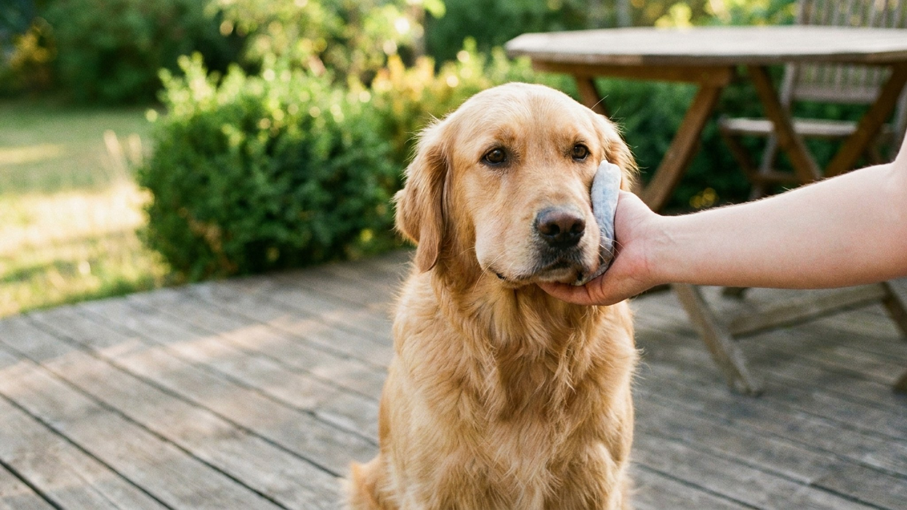

Лето, прогулка, трава — и вдруг собака взвизгивает и начинает тереть морду лапой. Укус перепончатокрылого насекомого — от неприятного до смертельно опасного в зависимости от места, количества укусов и индивидуальной реакции. У большинства собак дело ограничивается местным отёком и болью. Но у 1-3% развивается анафилаксия, которая убивает за 20-30 минут без лечения. Задача владельца — понять разницу и действовать правильно.
🐾 Экономьте на лишних визитах к врачу
Сначала спросите AI-ветеринара в AnimaLife — часто этого достаточно, чтобы понять, нужен ли визит к врачу.
Собаки получают укусы насекомых предсказуемо — там, куда они суют нос. По статистике ветеринарных обращений, более 70% укусов приходятся на голову и передние конечности.
Пик случаев — июнь-август, пик активности ос и пчёл. Особенно рискуют любопытные молодые собаки, которые охотятся на насекомых.
С клинической точки зрения — есть.
Пчела оставляет жало в коже: жало продолжает вводить яд ещё несколько минут после укуса (за счёт мышечного механизма). Его нужно удалить как можно быстрее. Пчела жалит один раз и погибает.
Оса жала не оставляет и может ужалить несколько раз. Яд оси и пчелы различается по составу, но оба содержат мелиттин, фосфолипазу A2 и гистамин — вещества, вызывающие боль, воспаление и, при системной реакции, анафилаксию. Яд оси несколько более аллергогенен у части животных.
Как удалить жало пчелы: не давить пальцами и не пинцетом — так выдавите остаток яда. Поддевайте жало ногтем, краем банковской карты или тупой стороной ножа горизонтальным движением. Занимает 2-3 секунды.
В большинстве случаев укус вызывает только местную реакцию. Это не опасно, но болезненно.
Признаки:
Что делать при местной реакции:
Анафилаксия — системная аллергическая реакция, при которой иммунный ответ выходит из-под контроля. Развивается у сенсибилизированных животных — тех, у кого уже был контакт с ядом насекомых (необязательно со значимой реакцией в первый раз).
Временной коридор: первые симптомы — в пределах 5-30 минут после укуса. Без лечения — ухудшение в течение 20-30 минут.
Симптомы анафилаксии:
Если наблюдаете хотя бы два из этих признаков — немедленно в ветеринарную клинику. Не ждать, не звонить, не наблюдать «ещё пять минут». Анафилаксия лечится внутривенным адреналином, кортикостероидами и инфузионной терапией — это только в клинике.
Если собака поймала осу или пчелу и их не успели отобрать — насекомое жалит ротовую полость. Это отдельная история даже без системной аллергии.
Язык, мягкое нёбо, основание глотки — ткани с обильным кровоснабжением и рыхлой структурой. Отёк развивается стремительно, и уже через 10-15 минут может сузиться просвет гортани. Собака начинает дышать с трудом, появляются стридорозные (свистящие, хрипящие) звуки при вдохе.
Симптомы проблем с дыхательными путями:
Это неотложная ситуация вне зависимости от наличия системной аллергии. Даже при единственном укусе в ротовую полость — едьте в клинику немедленно, не ждите ухудшения.
Вопрос о домашних антигистаминных при укусах насекомых — один из самых обсуждаемых. Позиция: дать антигистаминный без консультации врача можно только при чётко местной реакции и невозможности быстро попасть в клинику. При любых признаках системной реакции — сначала везти, потом думать о препаратах.
Препараты, которые ветеринары иногда рекомендуют для домашней аптечки активных владельцев (только по согласованию с вашим ветеринаром и с учётом особенностей конкретной собаки):
Ключевое: антигистаминные не останавливают анафилаксию. Единственное лечение анафилаксии — адреналин. Антигистаминные снимают зуд и умеренный отёк, но не влияют на сосудистый коллапс.
🐾 Всё о вашем питомце — в одном приложении
AI-ветеринар, дневник, напоминания о прививках и уходе. Установите AnimaLife — это бесплатно, в Telegram и MAX.
🐾 Понравился разбор?
Подпишитесь на канал — каждый день разбираем по одному тревожному симптому у кошек и собак: что в пределах нормы, а когда пора к врачу. Подпишитесь, чтобы не пропустить разбор, который может спасти здоровье вашего питомца.
Если реакция была только местной и прошла без осложнений, имеет смысл сделать несколько вещей:
Следующий укус почти всегда даёт более выраженную реакцию, чем предыдущий — иммунная система «запомнила» аллерген. Если в первый раз обошлось, это не гарантия, что обойдётся во второй.